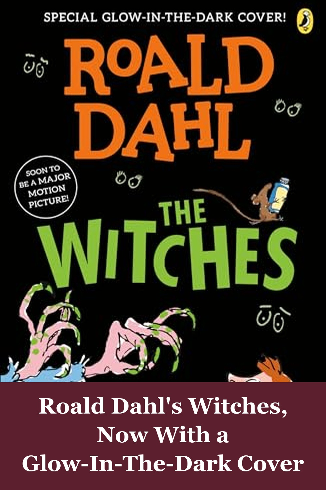
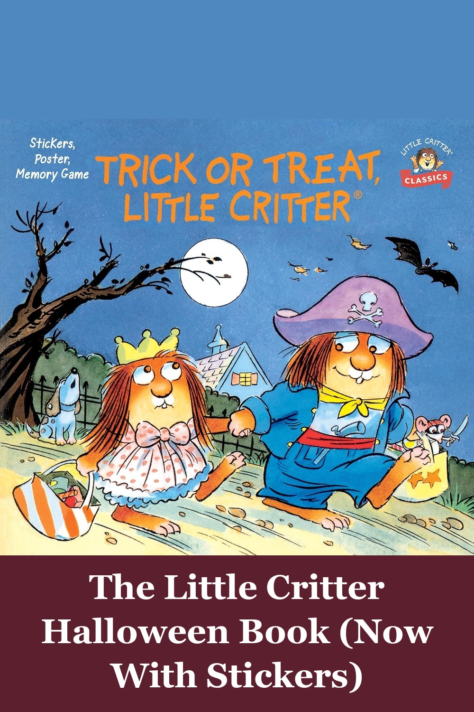
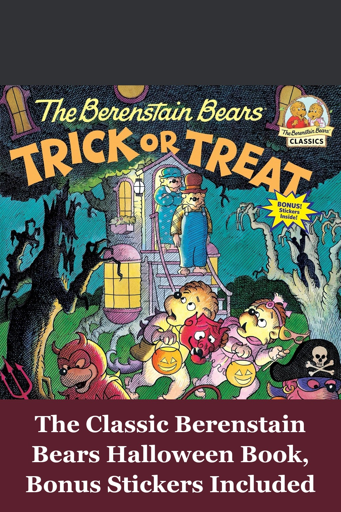

The Witches
A boy and his grandmother go up against real witches in this Roald Dahl classic for ages 7-10 — darker and funnier than the movies, with a special glow-in-the-dark cover edition that makes it feel extra Halloween.
As an adult, I can report that it is simply a magnificent story... Dahl is a masterful storyteller and in 'The Witches' he has weaved imagination, fear and courage into a fantastically fun story that has stood the test of time.— verified Amazon buyer
View on Amazon →
Trick or Treat, Little Critter: A Halloween Book for Kids and Toddlers
Little Critter and friends head out trick-or-treating in this full-color storybook for ages 2-6 — now with bonus stickers included, an easy Halloween-season pick for toddlers who already love the Little Critter books.
My toddler loves Little Critter Books, and to my delight, I recently stumbled upon a Little Critter book with a Halloween theme, which I knew my toddler would love. We spent some quality time reading it together during the holiday season, and it was truly an enjoyable experience for both of us.— verified Amazon buyer
View on Amazon →
The Berenstain Bears Trick or Treat: A Halloween Book for Kids and Toddlers
Brother and Sister Bear go trick-or-treating for the first time and learn that appearances can be deceiving — a nostalgic Halloween classic for ages 2-5 with over 50 bonus stickers tucked inside.
All the Berenstain Bears books are wonderful. They teach a life lesson to children in easy to understand language. We read these books to our daughter and now we read them to our granddaughters.— verified Amazon buyer
View on Amazon →